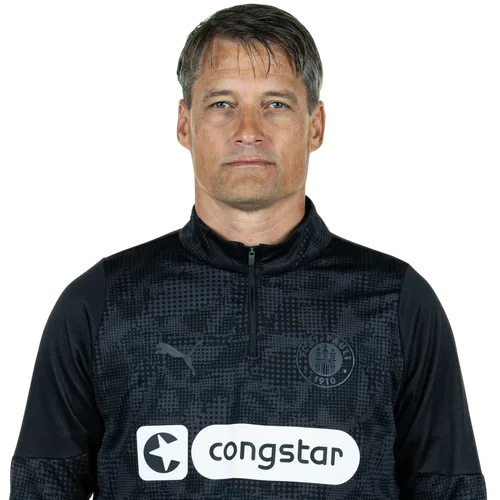
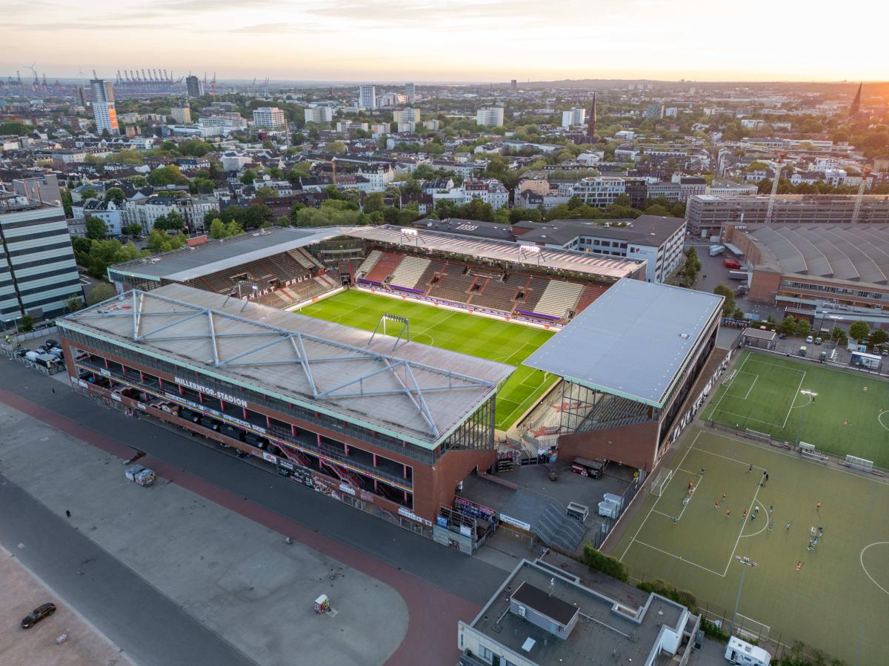

Treinador: Alexander Blessin
Alexander Blessin é o atual treinador do St. Pauli. O técnico alemão assumiu o comando da equipa no verão de 2024, destacando-se na Bundesliga pela sua abordagem tática moderna e capacidade de organização coletiva após a subida do clube ao escalão máximo.

Estádio: Millerntor-Stadion
O Millerntor-Stadion é o estádio oficial do St. Pauli. Localizado no vibrante coração de Hamburgo, o mítico recinto destaca-se mundialmente pela sua forte identidade social, pelas bancadas maioritariamente destinadas a adeptos de pé e pela entrada da equipa em campo ao som de AC/DC.

Estilo de Jogo:
O estilo de jogo de Alexander Blessin no St. Pauli baseia-se num sistema fortemente moldado pelos princípios da escola Red Bull de pressão e transição rápida
"Kein Fussball den Faschisten!"